Collabs creator app
Rebuilding Shopify's creator-marketing product from a mobile web experience into a native app, and designing the merchant and creator sides as one connected system.
The problem space
Before this rebuild, a creator's entire relationship with Collabs lived in a mobile browser. There was no dedicated app, so checking whether a brand had approved a submission, posting new content, or tracking a payout meant juggling tabs on a phone, losing your place mid-task, and sometimes giving up and emailing support just to find out where things stood.
Fixing that meant rebuilding Collabs as a native app. But the native app wasn't the whole job: the existing merchant admin, where brands manage collabs, needed its own overhaul to connect to it, which meant two surfaces now had to work as one system. Underneath, it was really an information-architecture problem: two audiences and two surfaces sharing one taxonomy of products, categories, brands, and collab states, and the job was making all of it feel like a single coherent system instead of two apps bolted together.
Early empathy mapping with our UX researcher surfaced a real tension: creators wanted momentum and control, but also simplicity and automation. That same tension showed up structurally: the old navigation, five flat top-level tabs, could serve one need or the other, not both.
One system that reads as a single product to two very different people: a merchant configuring a collab, a creator posting and getting paid. Neither side an afterthought.
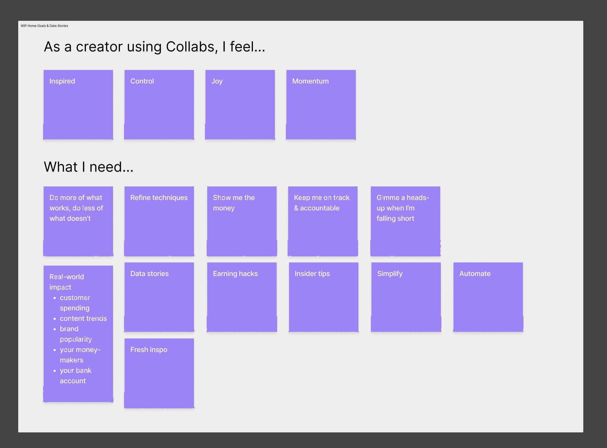
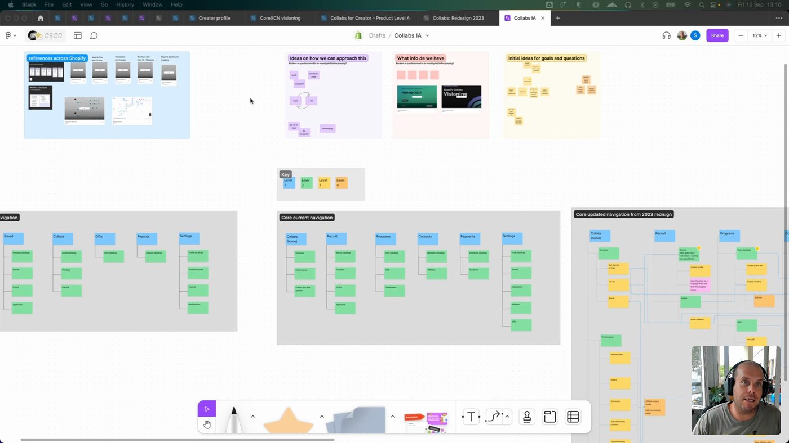
The rest is behind a password
The process, the outcomes, and what I learned along the way. Reach out and I'll send it over.
What I worked on
Set three tone of voice pillars before any screen work started, each grounded in real creator insight. The three, Gutsy, Authentic, Empowering, weren't abstract adjectives. Authentic, for example, traces back to a real line, "Collabs is a vibe... clarity over clever," not a vague descriptor. This became the north star for every screen that followed.
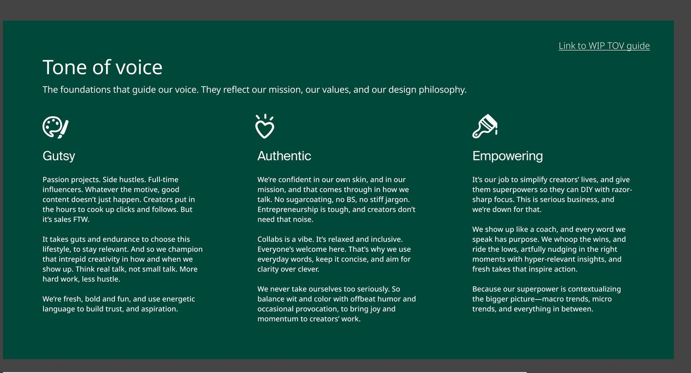
Built one shared model of products and collab states, so what a merchant sets up and what a creator sees come from the same source. Information architecture became the cornerstone of this project: merchants and creators related to the same products, categories, and collab states in completely different ways, and without one shared model underneath, that mismatch would have made an already complicated product even messier. This is the creator app's full screen inventory, mapped to reconcile with what already existed in the merchant admin:
- Top level: Discover, Creator Shop, Performance, Settings
- Second level: PDP, Merchant Shop, Search, Collections, Connections, Security
Four top-level tabs and six second-level screens, each broken into its own component blocks: the creator app's half of a model now aligned with admin's existing structure.
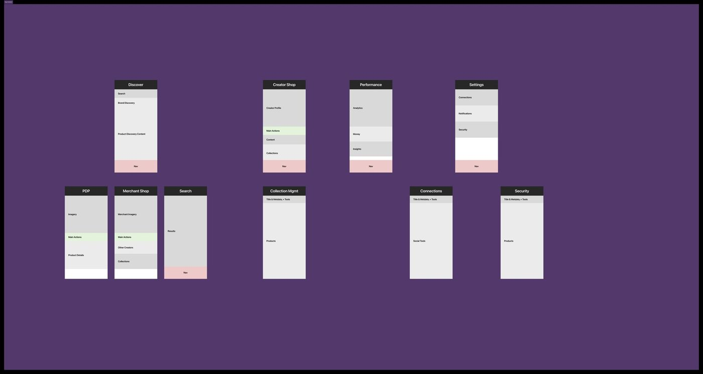
Redesigned Home around real creator personas, after user research with creators on the MVP showed one generic feed wasn't landing. The fix was three personas, each mapped along a spectrum from your active collab out to discovery:
- Coach: "show me what's working"
- Insider: "show me something new"
- Guardian: "keep me on path"
Three different needs, met by one feed that flexed depending on who was looking at it.
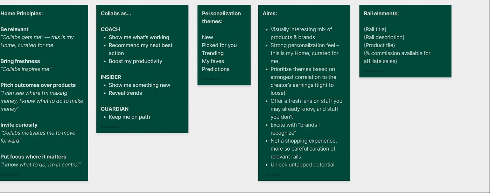
Applied a content strategy process to prioritize Home's growing list of rail ideas. Home's rails are the scrolling content rows on the feed, things like "Your top sellers." Ideas for new rails kept coming, well beyond what we had room to build, so each one had to earn its spot through the same process:
- Mapped by type and priority, surfacing patterns across ideas that a flat list would have hidden
- A plain-language rationale for why it should exist
- A taxonomy-grounded title and body copy, like "Trending in {my category}" paired with "Tap into the trendsetters to boost your commissions," which let us map and prioritize ideas against each other rather than judging them one by one
- A priority call: Do Now, Do Soon, For the Future, or Don't Do
That's content strategy doing its job: deciding what earned a spot, and giving each one real voice from day one.
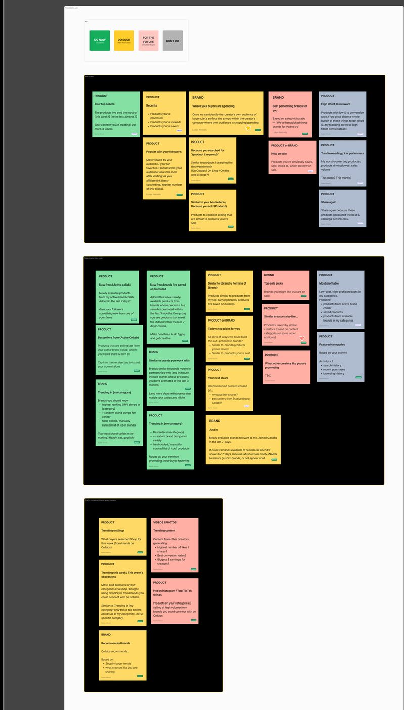
Pressure-tested the taxonomy and turned it into shippable logic, working directly with engineering, product, and design.
- Do we favorite, save, or follow a brand? Favorite.
- Where do favorite brands live, Home or Library? Library.
- Are brand values clickable? No, too few creators had them.
That same collaboration carried into engineering: each Home rail got spec'd as a reusable component, with conditional logic written right alongside the visual: "IF creator has an active brand collab, show the hero product card... ELSE fallback." Content and logic shipped together in one artifact, so the design carried its own rules with it.
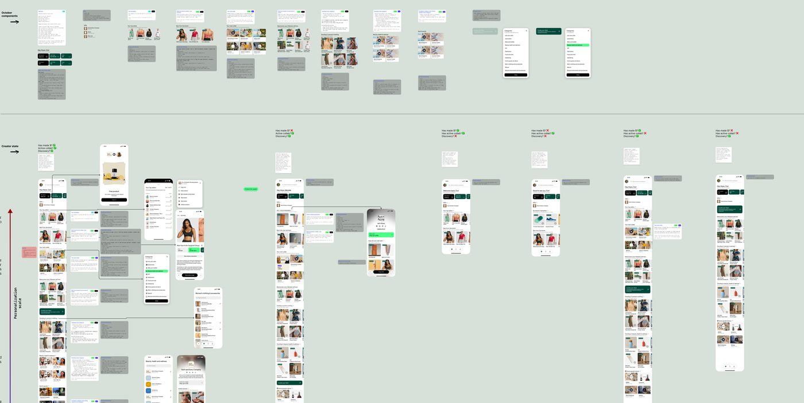
Wrote and structured the full onboarding flow, then revised it when funnel data showed ~10% of people were dropping off at one specific step: social-account connection. Seven stages end to end, from login through celebration. Two got special attention: community guidelines, which had to set real expectations without reading like legal boilerplate, and the "Leaving so soon?" exit-intent modal, built to catch people before they abandoned the flow for good. The edge cases got as much scrutiny as the happy path, because that's usually where flows quietly lose people. At social connection specifically, I worked with the designer on a skip option, cutting that step's drop-off from ~10% to about 3%.
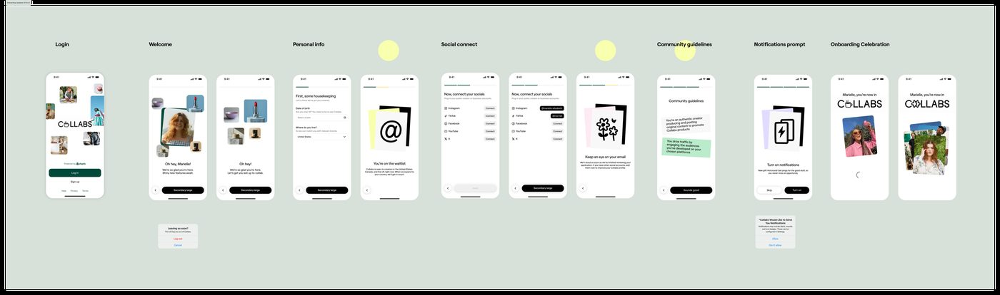
Borrowed Gravity, the design system I'd helped build the content for at Shop (Shopify's own consumer app), to see if it could hold up as the base for Collabs's native build. A teammate turned Gravity's components into an experimental Figma UI kit. Ahead of the full build, I stress-tested it by translating the existing web creator experience, its content, voice, and screen structure, into that kit, to see where it held and where it didn't. What held up became the base for the new native experience, before the engineer started building on top of it.
Full circle: the system Collabs built on top of Gravity went back onto Shop itself, as part of an expansion strategy. This gave creators a shoppable storefront inside Shop: a TikTok-style feed leading to "Shop this look," then into curated collections. The interesting part was proving the system could grow sturdy enough to stand on its own, back on the very surface it came from.
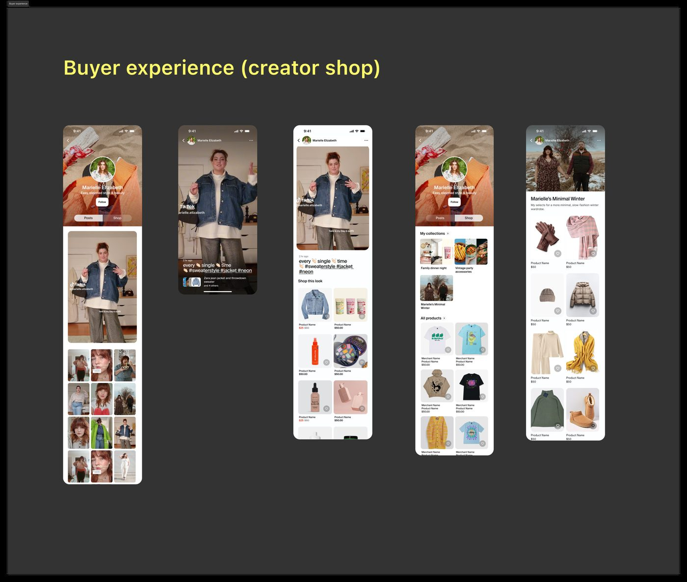
What got shipped
Shipped and well-received: 4.8 stars across 298 ratings, live today on the App Store and Google Play. Unsolicited, from the reviews: "Keeps me up to date with every sale that's made," and "so user friendly... we've had the best experience with it."
15% of the people who skipped social-account connection came back and connected anyway, with nobody prompting them to. Adding the skip option cut that step's drop-off from ~10% to ~3%, and that follow-up number is what mattered: most of them were just pausing mid-flow.
Documented decisions traced straight to what's live, concrete enough to check against the actual screens. Here's a specific call made during design, and the exact screen it became:
- The "favorite brands live in Library, not Home" call shipped exactly there
- The Coach / Insider / Guardian spectrum shows up as a live "Curate your feed" picker
- The taxonomy's Performance and Commissions sections are the app's real tabs, with commission math on every product page
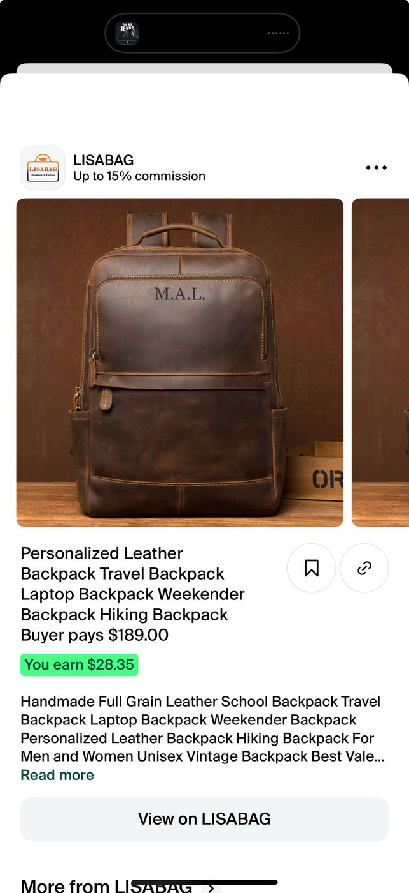
The merchant-admin half shipped too, a serious information architecture undertaking in its own right. The admin side runs on that same shared taxonomy, and seven of its features are documented publicly on Shopify's own Editions Winter '24 page:
- Creator search and filters
- Automatic commission payouts
- Consolidated creator profiles
- Bulk application management
- A unified connections table
- Per-segment affiliate offers
- TikTok Shop sync
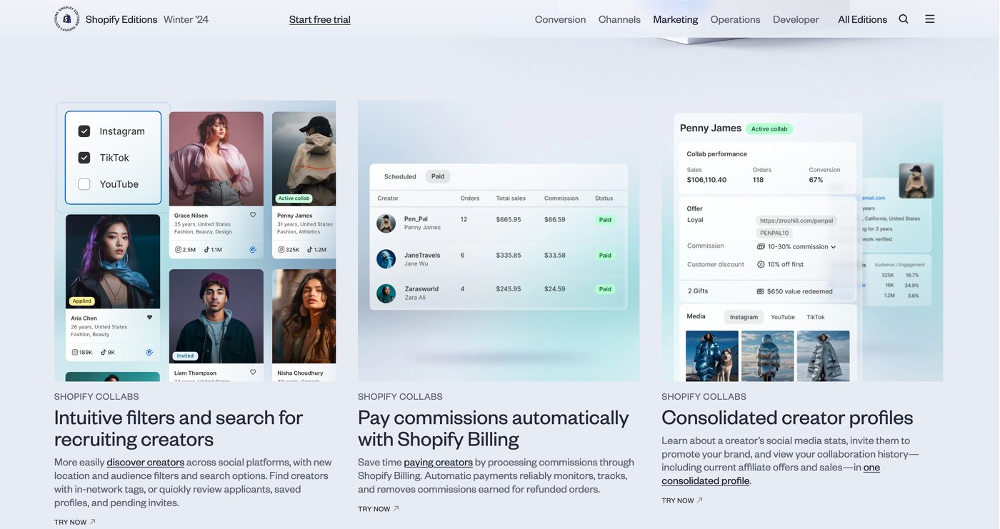
The lesson learned
-
Systems thinking is what kept two surfaces reading as one product.
I started the taxonomy as internal reference material, a doc to check against rather than a priority of its own. The real risk was never getting one screen wrong. It was the admin team and the app team quietly building against two different ideas of what a "collab" was, something that wouldn't show up until both surfaces shipped and stopped matching.
The document is what caught that early. Now I scope that kind of groundwork as its own deliverable on any multi-surface project, before a single screen gets drawn.
-
"Good enough for everyone" turned out to mean "good for no one in particular."
I designed Home's MVP as one feed for every creator, on the bet that a single well-built experience would flex enough to work for all of them. User interviews testing that MVP found creators who wanted to double down on one collab, creators who wanted to discover something new, and creators who just wanted guardrails, all reading the exact same feed and none of them fully getting what they needed from it.
Now I look for where a single flow is quietly flattening different needs, instead of waiting for research to force the issue.
-
A decision that looked small on the merchant admin could land as real friction for the creator.
Working across both surfaces let me see the full loop: the merchant managing a collab on one end, the creator posting and getting paid on the other. Very few projects let you sit with both halves of a relationship at once, and it changed how I thought about the taxonomy. A labeling choice a merchant barely noticed on their end could be the exact word a creator was scanning for on theirs, and getting it wrong on one surface quietly broke trust on the other.
It's changed how I scope any shared-taxonomy project since. I ask who else touches this before I assume I know the full shape of the problem.
There's always more behind a case study.